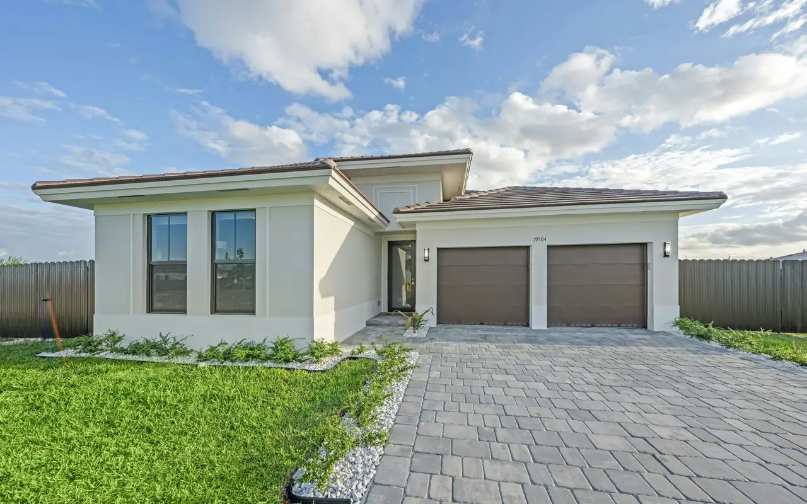

Nassau County · South Shore · Long Island NY
Service Locations
Same-day garage door repair throughout Nassau County's Five Towns — Cedarhurst, Hewlett, Lawrence, Woodmere, and Inwood. Direct local dispatch, a free written estimate before any work begins, and service 24 hours a day, seven days a week.
- Same-Day Service
- Free Estimate
- 24/7 · Holidays
Our Service Area
All Five Towns — Nassau County, Long Island NY
Five Towns Garage Door provides same-day garage door repair and installation throughout all five communities of Nassau County's South Shore. Each community has its own character — and its own garage door challenges. We know them all.
Not Sure Which Line to Call?
The main line reaches dispatch for every community, any time of day.
Local Conditions
Why Location Matters for Your Garage Door
Garage doors in the Five Towns don't all age the same way. Homes closest to Reynolds Channel, Jamaica Bay, and Lawrence Bay live with salt-laden air that accelerates corrosion on steel lifting cables, spring coils, and exposed hardware. Inland blocks see slower wear, but many of their doors still run on original postwar-era springs and tracks.
That's why each community has its own page: the recommendations for a waterfront home in Inwood or Lawrence — galvanized or marine-grade stainless steel cables, zinc-coated springs, and semi-annual lubrication — are different from what a renovated Hewlett or Woodmere home needs, where heavier custom doors and finished garage ceilings are the bigger concern.
Waterfront & South Shore Homes
For properties within salt air range of the water, we recommend galvanized or stainless steel cables, zinc-coated springs, and semi-annual rather than annual lubrication. Ask about coastal-rated hardware when you call the South Shore line at (516) 612-9317.
Available in Every Community
Garage Door Services Across the Five Towns
Garage Door Repair
Broken springs, snapped cables, off-track doors, noisy rollers, and failed openers — fixed same day.
New Door Installation
Steel, insulated, carriage house, and contemporary doors with a free in-home estimate.
Openers
Opener repair and installation, including LiftMaster and Genie belt, chain, and wall-mount models.
Residential Service
Everything your home's garage door needs, including the annual residential tune-up.
Commercial Service
Sectional, rolling steel, high-speed, and fire-rated doors for Five Towns businesses.
Questions First?
Straight answers about springs, cables, openers, cost, permits, and safety.
Service Area Questions
Five Towns Service Area FAQ
Quick answers about where we work and how to reach us.
Which communities does Five Towns Garage Door serve?
We provide same-day garage door repair and installation throughout all five communities of Nassau County's Five Towns: Cedarhurst (11516), Hewlett (11557), Lawrence (11559), Woodmere (11598), and Inwood (11096). Call (516) 490-0931.
Which phone number should I call?
The main line, (516) 490-0931, handles 24/7 dispatch and emergency service for every community. The South Shore line, (516) 612-9317, is a direct line for waterfront communities, and the North Shore line, (516) 612-9316, serves northern Nassau County.
Where is your dispatch office?
Our office and dispatch location is 578 Central Avenue, Cedarhurst, NY 11516. We are available Monday through Sunday, 24 hours, including holidays.
Do waterfront homes need different garage door hardware?
Often, yes. Salt air from Reynolds Channel, Jamaica Bay, and Lawrence Bay accelerates corrosion on steel cables and springs. For waterfront properties we recommend galvanized or marine-grade stainless steel cables, zinc-coated springs, and semi-annual lubrication.
Google Reviews
What Customers Say
4.7 out of 5 stars from 15 Google reviews (as of September 2026). Reviews are quoted as written.
My opener's lift chain completely derailed from the gear assembly, leaving our SUV totally trapped inside the bay. The tech arrived with all the correct replacement garage door parts right inside his work vehicle to fix the mechanism. He re-aligned the motor assembly and completed the entire garage door repair so we could finally get out of the house.
The technician did a great job to fix my garage door ! I appreciate his recommendation to replace the one coil and to replace the cable too. he was effcient and fast, and polite. I was hesitant at first because of the additional cost, but he spoke to me safert issues are first! Thank you for a job well done !
I live in Oceanside, and I was in the market for a new garage door. I shopped around and came across Five Towns Garage Doors. Not only did they give me a good deal, but they were prompt, professional and extremely helpful. They showed up when they said they would and did a great job. If anyone is looking for a garage door, do not hesitate, call Five Towns Garage Doors!
Same-Day Service in Your Town
Cedarhurst · Hewlett · Lawrence · Woodmere · Inwood. Free written estimate before any work begins.
South Shore: (516) 612-9317 · North Shore: (516) 612-9316